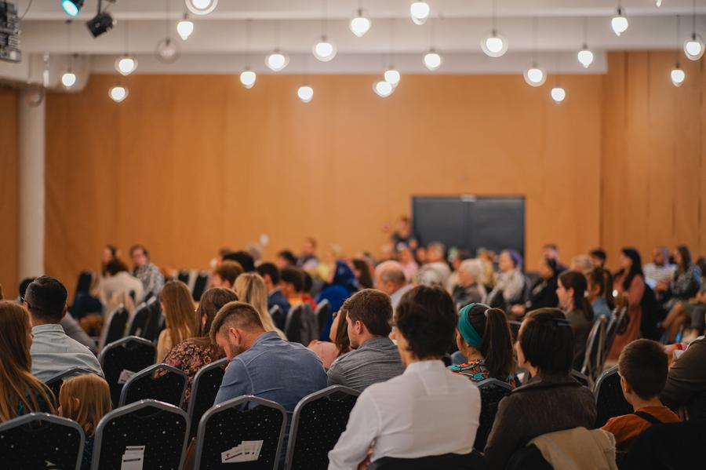
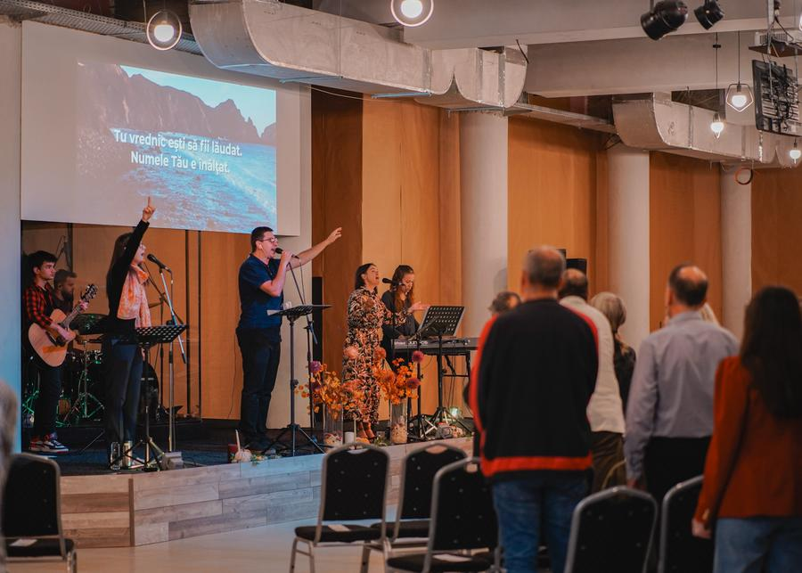
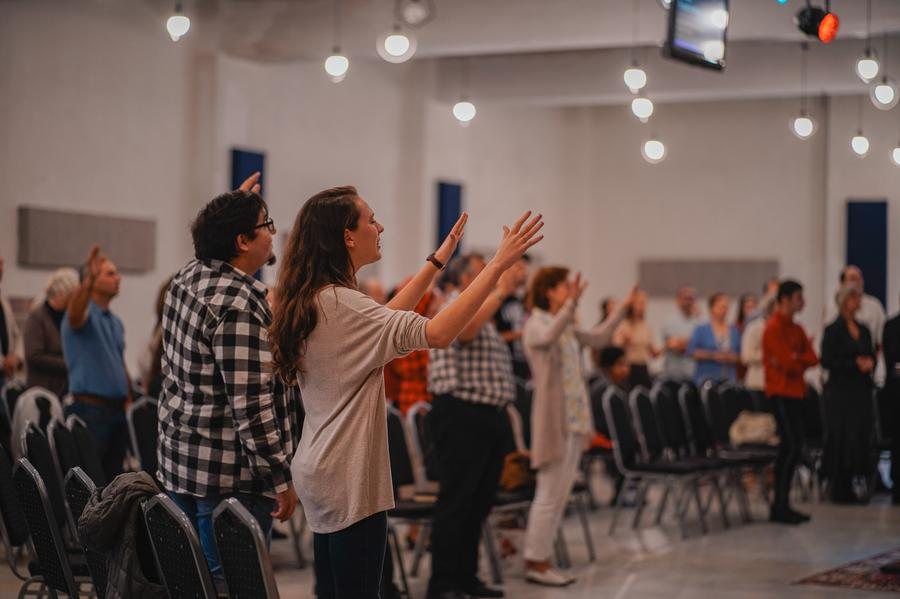
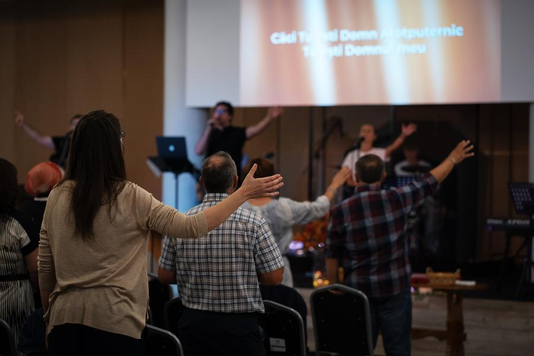
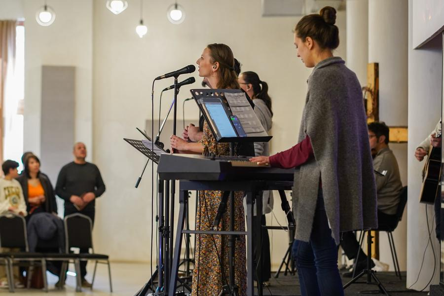
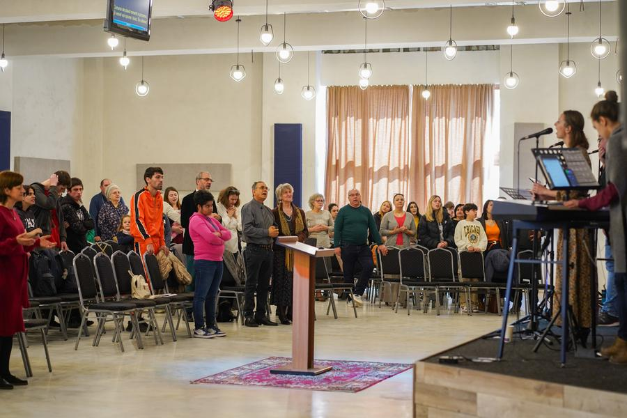
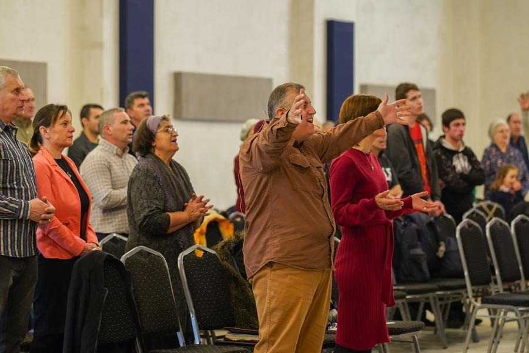
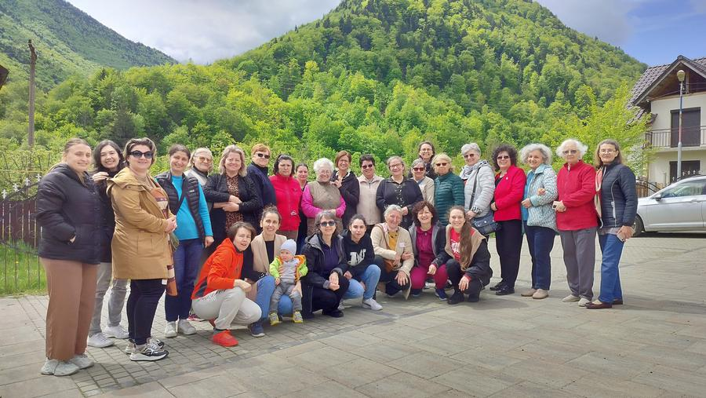

Biserica Metanoia își dorește să fie o comunitate pasionată de gloria lui Dumnezeu și de transformarea oamenilor.
Scopul nostru este să fim un cadru în care oamenii să beneficieze de o întâlnire autentică și personală cu Dumnezeu.
Această întâlnire va produce transformarea valorilor, prin puterea Evangheliei, transformare ce se va reflecta în modul în care luăm decizii personale, în calitatea relațiilor noastre și în modul în care contribuim concret la extinderea Împărăției lui Dumnezeu în Brăila, România și în lume.
Proclamăm fără reținere autoritatea Scripturii.
2 Timotei 4:2Adorăm cu toată ființa pe Isus Hristos în închinare.
Ioan 4:24Credem cu putere în tăria rugăciunii.
Iacov 5:16Mărturisim cu îndrăzneală Evanghelia lui Isus Cristos.
Efeseni 6:19Închinare, părtășie și oameni — o mică fereastră spre ce înseamnă, de fapt, Metanoia duminică de duminică.








Am pus pe larg toate convingerile noastre doctrinare pe o pagină dedicată — de la cine este Dumnezeu, până la misiunea bisericii.